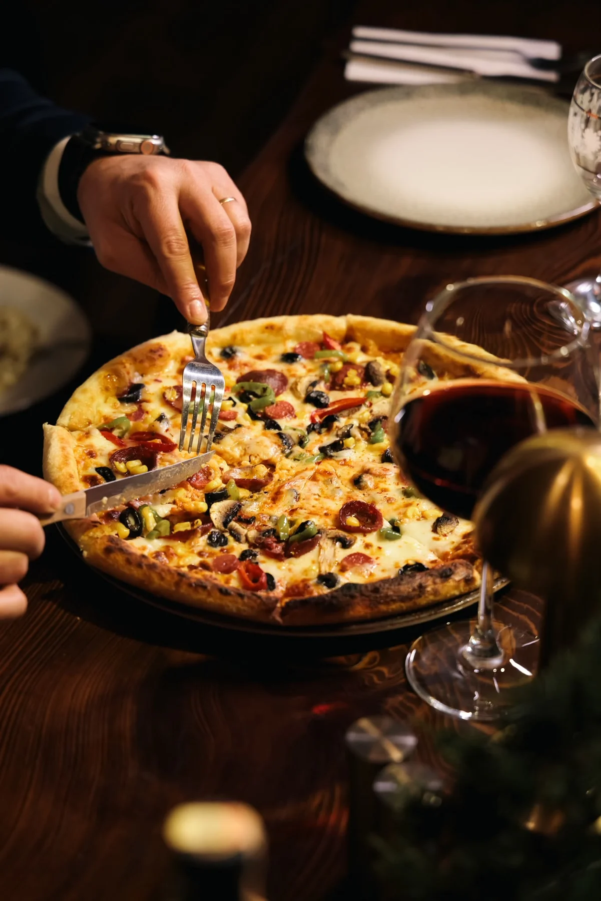
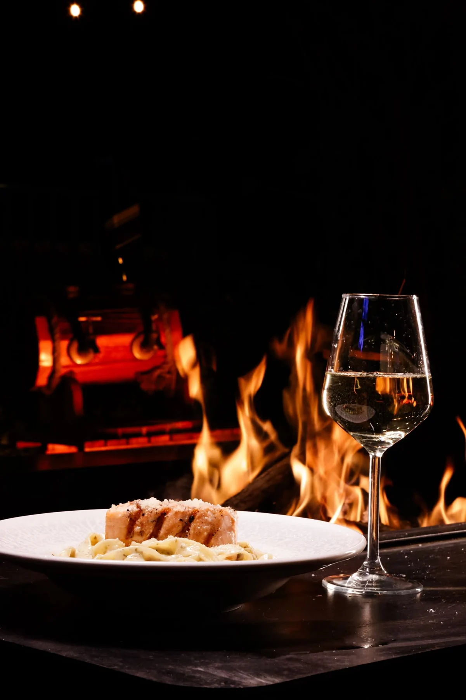
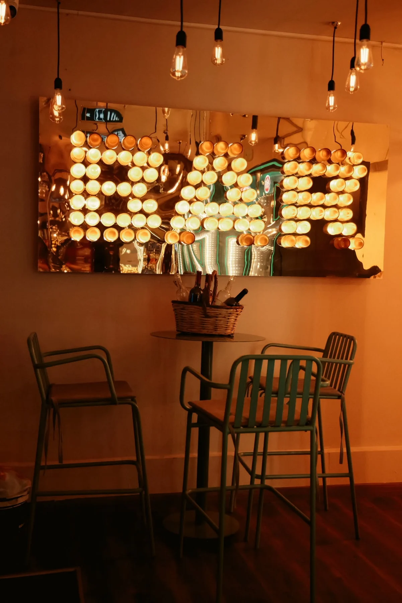

Fırından, sofraya.
01Taş fırın pizzaları

ZEKERİYAKÖY, İSTANBUL
Ateşin sıcaklığı, masanın keyfi.
Biraz daha kalmak için bir sebep.
EGG BISTRO’YA HOŞ GELDİNİZ
Zekeriyaköy’de, uzun sohbetlerin eşlik ettiği sofralarda buluşuyoruz. Taş fırından çıkan pizza, sevdiğiniz bir kokteyl ve akşamı güzelleştiren küçük detaylar.
İster iki kişilik bir akşam, ister dostlarla kalabalık bir masa. Egg Bistro’da size de yer var.
Bize uğrayın ↗SOFRANIN ETRAFINDA

Taş fırın pizzaları

Kokteyller & şaraplar

Sofraya eşlik eden lezzetler

BİRAZ DA ATMOSFER
Sıcak ışıklar, ahşabın dokusu ve ateşin sesi. Akşamın aceleye gelmediği bir buluşma noktası.
Instagram’da daha fazlası ↗Her gün · 12.00–02.00